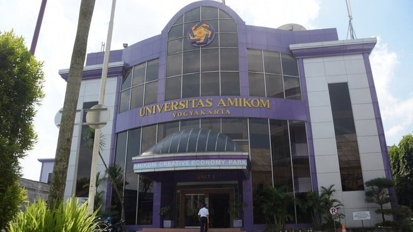

Universitas Amikom Yogyakarta merupakan perubahan dari Sekolah Tinggi Manajemen Informatika dan Komputer Amikom Yogyakarta. Sebelumnya Sekolah Tinggi Manajemen Informatika dan Komputer Amikom Yogyakarta, merupakan perubahan dari Akademi Manajemen Informatika dan Komputer Amikom Yogyakarta yang mendapatkan status terdaftar berdasarkan Surat Keputusan Menteri Pendidikan dan Kebudayaan Republik Indonesia No. 084/D/O/1994 tanggal 11 Oktober 1994. Perubahan bentuk ini dilakukan untuk mempermudah mencapai visinya sebagai perguruan tinggi unggulan dunia dalam bidang ekonomi kreatif berbasis entrepreneurship.
Universitas Amikom Yogyakarta yang sebelumnya Sekolah Tinggi Manajemen Informatika dan Komputer Amikom Yogyakarta telah menjadi Perguruan Tinggi Swasta Percontohan Dunia Model Private Entrepreneur oleh UNESCO (Unesco, A New Dynamic : Private Higher Education, 2009) dan juga menjadi Top 100 Perguruan Tinggi di Asia Tenggara versi Webometrics (Webometrics, 2014). Perguruan Tinggi tersebut juga telah meraih 20 penghargaan internasional dan lebih dari 50 penghargaan nasional serta menghasilkan 24% lulusannya sebagai pengusaha (Business Placement Center AMIKOM, 2014). Perguruan Tinggi telah terakreditasi institusi B dan telah mendapatkan sertifikasi ISO 2009.
Universitas Amikom Yogyakarta mempunyai peranan yang besar dalam dunia pendidikan sebagai pusat pengembangan ekonomi kreatif untuk meningkatkan daya saing bangsa, telah membuktikan mampu mengatasi berbagai kesulitan dan hambatan dalam pengelolaannya.Saat ini kepercayaan masyarakat cukup baik, dibuktikan diantaranya dengan meningkatnya jumlah mahasiswa dari tahun ketahun pada 2014 mempunyai 12.882 mahasiswa untuk Program Studi. Mulai dari Program Studi Diploma III Manajemen Informatika, Program Studi Diploma III Teknik Informatika, Program Studi S1 Sistem Informasi, Program Studi S1 Teknik Informatika dan Program Studi S2 Magister Teknik Informatika. Bahkan Program Magister Teknik Informatika dipercaya oleh Direktorat Jendral pendidikan Tinggi dikala itu bersama 5 Perguruan Tinggi lain seperti (Universitas Indonesia, Universitas Gadjah Mada, Institut Teknologi Bandung, Institut Sepuluh November Surabaya dan Universitas Bina Nusantara) yang diberikan hibah sebagai proyek percontohan Pendidikan Jarak Jauh (PJJ).
Pada masa mendatang, Universitas Amikom berkeinginan untuk tetap lebih maju sesuai dengan jaman dan tantangannya yang terus berubah. Oleh karenanya dengan semakin berkembang dan dewasanya Universitas Amikom Yogyakarta serta kebutuhan untuk memenuhi kepercayaan masyarakat dan tuntutan perubahan jaman yang sulit diprediksi, diperlukan strategi dan sasaran pengembangan yang terencana, sistematis dan terukur. Dengan memanfaatkan berbagai keunggulan strategis yang dimiliki secara optimal, evaluasi kondisi saat ini serta berpijak pada visi dan misi Universitas Amikom Yogyakarta, maka perlu disusun sebuah rencana strategis yang akan memberikan arah serta menjadi acuan bagi Universitas Amikom Yogyakarta dalam perjalanan kedepan.